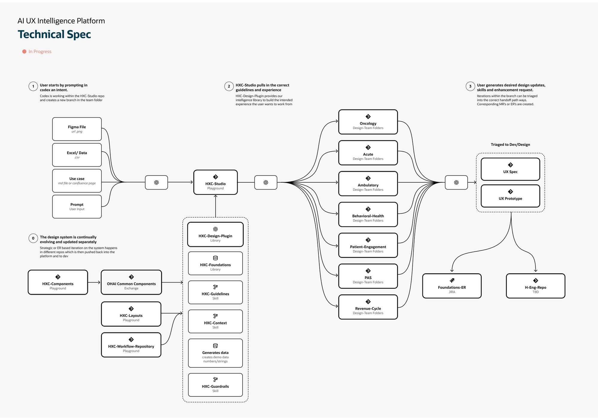

Oracle Health
- Role Director, User Experience Design. 2024 to present.
- Team Experience Core, the platform design team I established. Sets the design standard for five product teams and dozens of clinician-facing applications.
- Work Interaction patterns, components, design system, research practice. Named inventor on eight patent applications filed by Oracle.
Most of the work is unreleased and stays inside Oracle. What I can show is the operating model, because the operating model is the work.
Organize around the journey
Experience Core inherited thirty-four patterns, no structure. I grouped them by the clinician's journey, each stage a job in the user's words: access, triage, interpret, execute, collaborate, follow up. Ownership followed, then the team. A designer owns a stretch of journey, not a pile of components.

From comps to rules
Design still starts in Figma. The comp stopped being the deliverable; the rules did. Components get guidelines, reference a person or a model can look up. Layouts and patterns get skills, which carry the judgment of when, when not, and how. A skill selects and configures. It does not code.
I wrote the first skills myself, then gave each designer a pattern and its skill.
AI in the designers' workflow
Three things, built inside the team. A prototyping pipeline: an intent goes in, a brief, a frame, a data file, and a working prototype comes out. Custom tooling around it, so the pipeline runs from where designers already work. A shared skill library in a team repo, which every designer draws from and adds to, so the judgment accumulates instead of living in one head.
Concept to testable prototype went from weeks to days. The team validates more concepts per cycle with customers, because a prototype is now cheap enough to be wrong.
Two demos made the case. Both are built on the Action List, the clinician's worklist, the place work lands and gets done. It shipped in 2025 and is in customers' hands.
The skill test
I wrote the skill for the Action List: the rules for when it applies, what it holds, and how it is configured. To prove the skill was doing work, I gave three agents the same prompt and had them build the Action List from scratch, once without the skill and once with it.
Without it, three different layouts, three different behaviors. With it, three prototypes that matched each other and the shipped design. That was the argument for the operating model, made in one screen.
One pattern, three roles
The second demo answered the question every product team asked: does one pattern serve everyone? Same set of patients, three roles. The physician sees fewer tasks, weighted to decisions. The nurse sees more, weighted to execution and follow-up. The front desk sees scheduling and paperwork and nothing clinical.
One pattern, one skill, three experiences, because the skill knows what each role is there to do.

Upskilling the team
A new toolchain is a leadership problem first. I ran a learning day: no product work, no clinical constraints, a made-up brief each, and one rule, ship a working prototype by day's end. Everyone did, some of it silly on purpose. The fear left in an afternoon.
Each designer then owned a pattern and its skill, so the learning had somewhere to land. The pipeline, the tooling, the shared skill library: designers built them for themselves.

Three gates and a definition of done
Layouts kept misaligning because nobody shared a definition of done. I wrote one as three gates; release approval by the platform leads with Dev and Product follows the third.
I aligned eight Dev and PM pillar leads first, then SVP peers, then the top. The Action List skill and a three-role human-factors demo became the reference example senior engineering leadership pointed to.